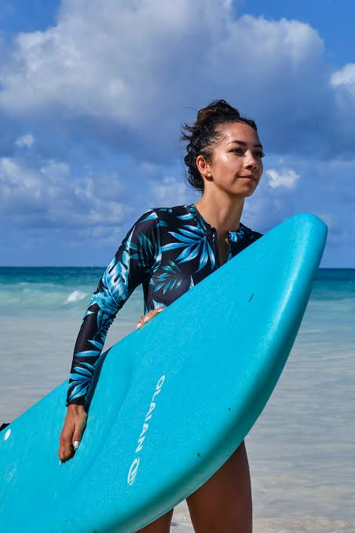
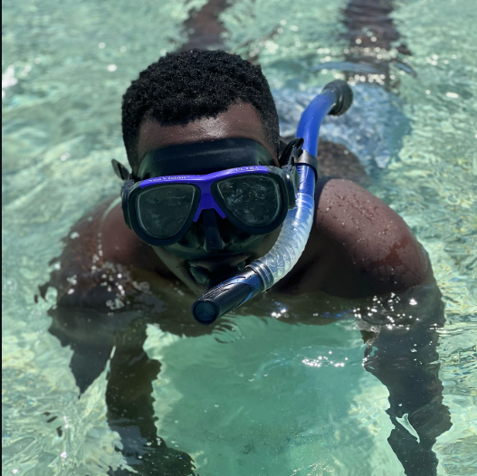

Linen Kaftans
Loose, breathable pieces cut for the heat, dyed in the same indigo and ochre tones as the old town's doors.


Be Local — clothes that aren't just clothes, but souvenirs. Coastal fashion, handmade jewellery and the places that made them.
Second Tide · Discovery
This is discovery, not shopping. Every piece here is made by someone along this coast, and carries a little of it home with you — a print, a pattern, a material that only makes sense here.
Kanga and kitenge reworked into everyday pieces, linen kaftans, and tailoring inspired by the Swahili Coast's own wardrobe.

Loose, breathable pieces cut for the heat, dyed in the same indigo and ochre tones as the old town's doors.

Bold printed cotton, each pattern carrying its own Swahili proverb — worn as a wrap, a scarf, or reworked into tailoring.

Local tailors who can take a print you love and cut it into something you'll actually wear again at home.
The workshops, markets and small studios we send guests to — not the souvenir stalls built for a quick sale.
Small, family-run design studios along the Diani strip where the person who made the piece is often behind the counter.

Rotating markets in the villages inland, where prices are honest and the selection changes week to week.
Generations-old tailoring and woodwork shops, tucked behind the coast's older Swahili quarters.
Handcrafted jewellery, sandals and small everyday objects — the meaningful kind of souvenir.
Jewellery worked from brass, cowrie shell and sea glass, made by artisans a short walk from the beach.
Woven leather sandals and sisal baskets — simple, durable pieces that carry their maker's hand in every knot.

Carved spoons, woven mats and small objects that quietly bring the coast's rhythm into a home far from it.
Ready When You Are
The Five-Day Coast Adventure
One carefully curated journey. Local stays, hidden experiences and meaningful connections — no planning required.
Plan Your Escape